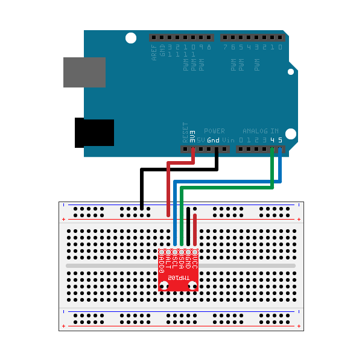

Measure Temperature From I2C Device on Arduino® Hardware
This example shows how to use the MATLAB® Support Package for Arduino® Hardware and the I2C interface to communicate with I2C devices.
Contents
Overview of TMP102 temperature sensor
This example uses TMP102, a two-wire serial output digital sensor, which can read temperature up to a resolution of 0.0625 degree in Celsius. You can also read data from the device in Extended mode with higher measurement limit.
Hardware setup
1) Connect the SDA, SCL, GND and V+ pins of the sensor to the corresponding pins on Arduino hardware. This examples connects SDA and SCL pins to A4 and A5 on Arduino Uno board. If you are using a different board, check the correct pins before connection.
2) Securely connect the power line of the I2C sensor.

Create an I2C device object
1) Create an arduino object and include the I2C library.
a = arduino();
Or, you can explicitly specify it in the Libraries Name-Value pair at creation of arduino object.
a = arduino('com22', 'uno', 'Libraries', 'I2C');
2) Scan for available I2C addresses.
addrs = scanI2CBus(a)
addrs =
'0x48'
'0x60'
Note the address of the temperature sensor. You will use it to create the I2C device object.
3) Create the I2C device object
tmp102 = i2cdev(a, '0x48')
tmp102 =
i2cdev with properties:
Pins: A4(SDA), A5(SCL)
Bus: 0
Address: 72 (0x48)
The bus defaults to 0. If you are using the dedicated I2C interfaces(SDA1, SCL1) on Due board, for example, make sure to set bus to 1.
Read temperature value
The sensor's temperature reading is digitized into 12 bits in Normal mode with 8 bits in MSB and 4 bits in LSB. Each LSB equals 0.0625 degrees in Celsius. Write the register address to read from first and then read two bytes of data from it. Use uint8 data type.
write(tmp102, 0, 'uint8'); data = read(tmp102, 2, 'uint8'); temperature = (double(bitshift(int16(data(1)), 4)) + double(bitshift(int16(data(2)), -4))) * 0.0625
temperature = 23.1875
Read temperature with higher measurement limit
With the TMP102 sensor's extended mode, you can measure temperature above 128 degrees by using 13 bits. To do so, you need to write value '60B0' in hex to configuration register at address 1.
writeRegister(tmp102, 1, hex2dec('60B0'), 'uint16');
Read the temperature from the register to get a more precise result. The TMP102's conversion rate defaults to 4Hz. Hence, pause MATLAB for about 0.25s before each reading.
pause(0.25); data = readRegister(tmp102, 0, 'uint16'); temperature = double(bitshift(bitand(data, hex2dec('FFF8')), -3)) * 0.0625
temperature = 23.1875
To change back the default configuration, type
writeRegister(tmp102, 1, hex2dec('60A0'), 'uint16');
Clean up
Once the connection is no longer needed, clear the associate object.
clear tmp102 a